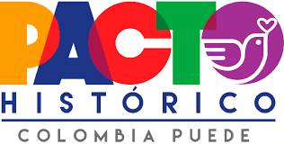

|  | Estatutos | Términos y condiciones | Política de Privacidad | Soporte |
|
|
|
|
Cambio del modelo económico, impulso a la producción agropecuaria y reforma agraria.
Ver másDesmonte del Esmad, fin al servicio militar obligatorio y más.
Ver más|
Sede Pacto Histórico Dirección: Cl. 41 #13-41 Bogotá Teléfono: 310 2701670 |
 |